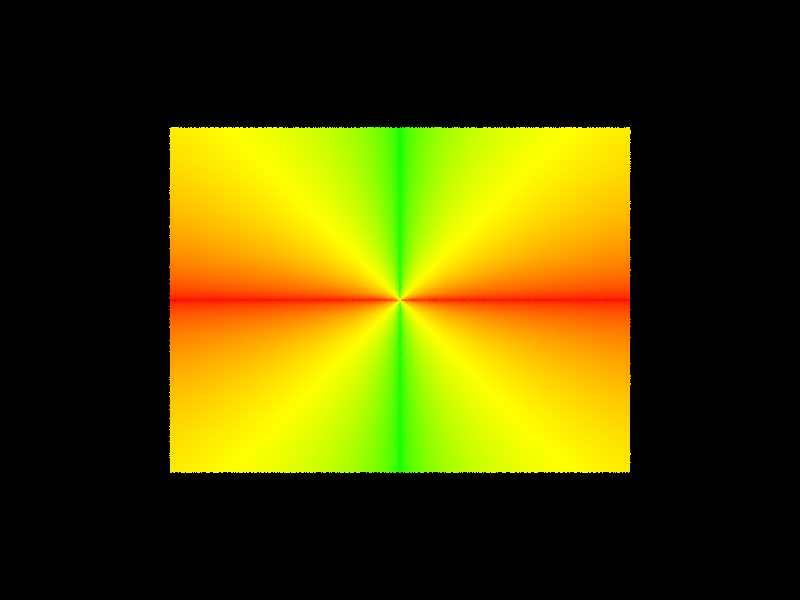
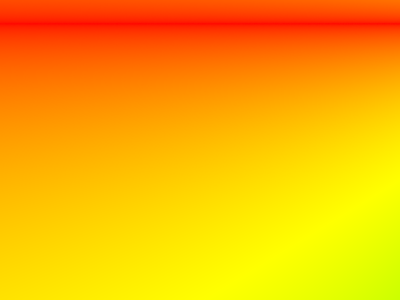
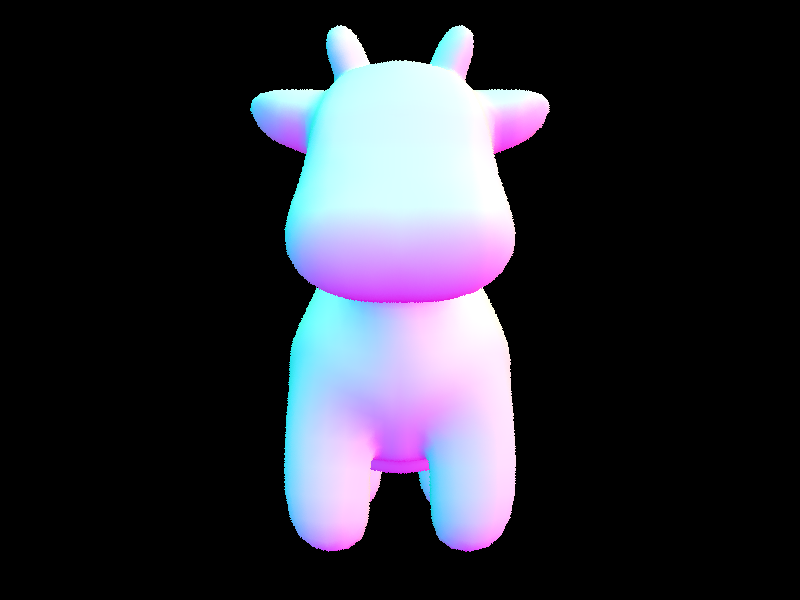
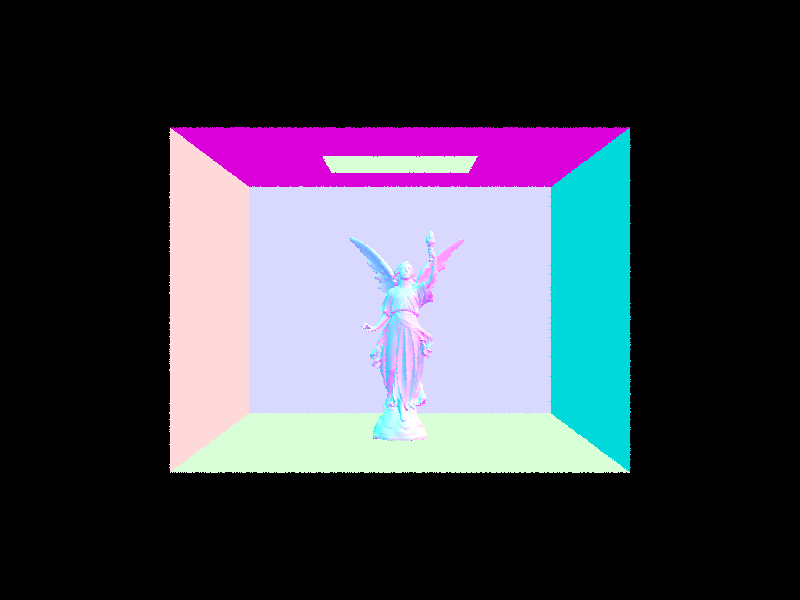
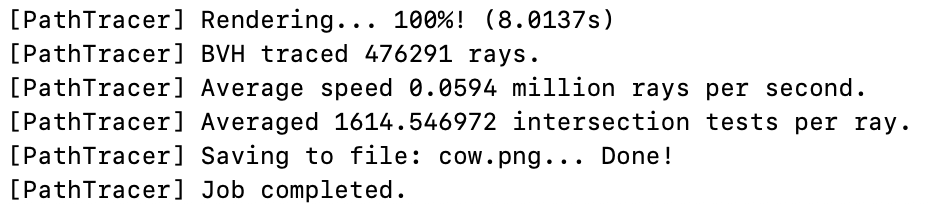
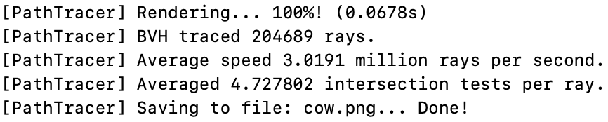

CS184/284A Spring 2025 Homework 3 Write-Up
Names:
Link to webpage: cal-cs184-student.github.io/hw-webpages-hgonzalez8/ Link to GitHub repository: https://github.com/cal-cs184-student/hw-webpages-hgonzalez8

Overview
In this homework, I implemented a basic ray tracer with support for multiple rays per pixel and acceleration using a BVH. First, I wrote ray generation, which turns each pixel into a 3D ray from the camera into the scene. The rays are computed using a pinhole camera model and transformed into world space. Next, I implemented pixel sampling and ray tracing. Each pixel is sampled multiple times with random offsets to reduce aliasing, and the color for the pixel is calculated by averaging the results of all the rays. For primitive intersections, I implemented ray-triangle intersections using the Moller-Trumbore algorithm. This checks whether a ray hits a triangle and calculates the hit point and surface normal for shading. To speed up ray tracing, I built a bounding volume hierarchy (BVH). The BVH groups primitives into a tree of bounding boxes, so rays can quickly skip areas of the scene that don't contain any geometry. I split nodes along the axis where primitives are most spread out, using the midpoint to divide them. Finally, I implemented BVH traversal, which checks rays against the BVH to find intersections efficiently. Leaf nodes are tested against all primitives, while internal nodes recursively check their children, returning the closest intersection if one existsPart 1: Ray Generation and Scene Intersection
Beginning with ray generation, this step converts a 2D sample on the image plane into a 3D ray in world space using the following steps:- The horizontal and vertical field of views are converted to radians: to be able to work with tangent
- Each pixel sample is converted from normalized screen coordinates ([0,1]) to camera space coordinates ([-1, 1]): to recenter the coordinate system, origin is in the middle
- The camera space coordinates are projected onto the sensor plane: where z = -1 in camera space
- Scale the x and y coordiates by \(tan(FOV divide 2)\): to account for the camera's field of view
- Normalize the direction vector
- Transform the vector into world space and normalize: transform using camera to world matrix
- Set the near and far clipping planes to limit the valid intersection
- Coordinates make the direction vector
I used the Moller Trombore Algorithm for the triangle intersection algorithm which uses barycentric coordinates to find the intersection point with the following steps:
- Calcuate the edges from the first corner of the triangle: \(e1, e2\)
- Get the offset vector: distance from corner to origin: \(s\)
- Compute cross products (1) ray direction and \(e2\) and (2) offset vector \(s\) and \(e1\)
- Compute the denominator of the factor which is a dot product between \(s1 and e1\)
- Compute the values for t, u, v based on the system of equations in the Moller Trombore Algorithm
- If the intersection is valid, the max t value of the ray should be updated because the intersection point is closer
- This helps to make a system of equations to solve for intersection
- Since this is a denominator, it should not be zero or close to zero because then the ray would be parallel or near parallel to the triangle.
- t = distance along the ray to intersection point which should be within the valid bounds of the ray
- u, v = barycentric coordinates to determine if the point is in the triangle
Here is an example 2x2 gridlike structure using an HTML table. Each tr is a row and each td is a column in that row. You might find this useful for framing and showing your result images in an organized fashion.
|
 |
 |
|
|

|
Part 2: Bounding Volume Hierarchy
My BVH is built recursively by grouping primitives into a tree of bounding boxes. First, for a given range of primitives, I compute a bounding box that encloses all of them. This box becomes the bounding box of the current node. I then check how many primitives are in the node. If the number is less than or equal to max_leaf_size, I make the node a leaf and store pointers to the primitives. This stops the recursion. If the node is not a leaf, I split the primitives into two groups. To do this, I compute the centroid of each primitive's bounding box and build a new bounding box around all of these centroids. I then look at the extent (spread) of this centroid box along the x, y, and z axes. The heuristic I use is to split along the axis with the largest extent. This means I choose the direction in which the primitives are most spread out. The idea is that splitting along this axis will better separate the primitives into two balanced groups and reduce overlap between child nodes. Once the axis is chosen, I split the primitives at the midpoint of that axis (the average of the min and max centroid values). I partition the primitives based on whether their centroid lies to the left or right of this midpoint. If the split fails (i.e., all primitives end up on one side), I fall back to splitting the list in half to avoid infinite recursion. Finally, I recursively build the left and right child nodes using the two partitions.|
 |
 |
|
 |
 |